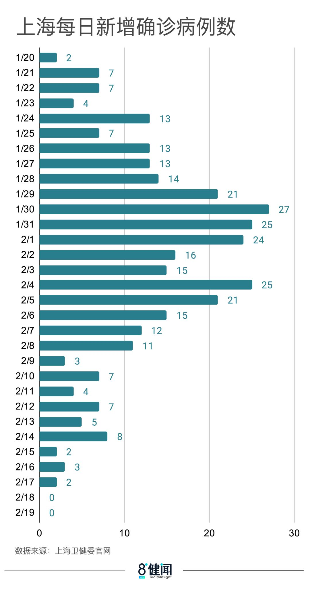
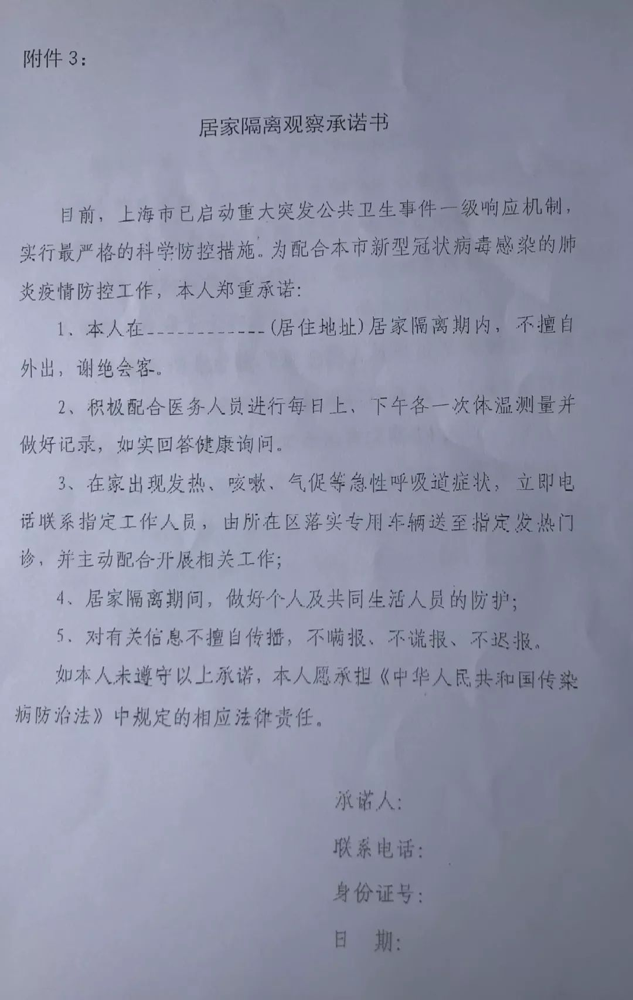
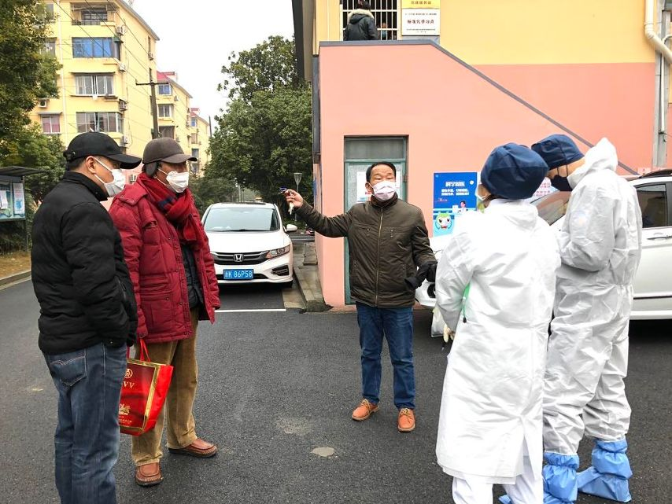
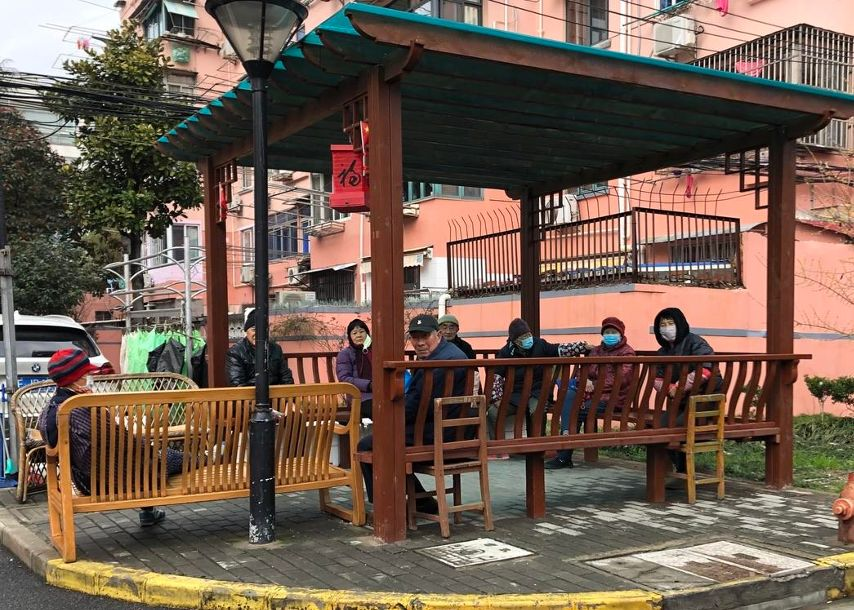
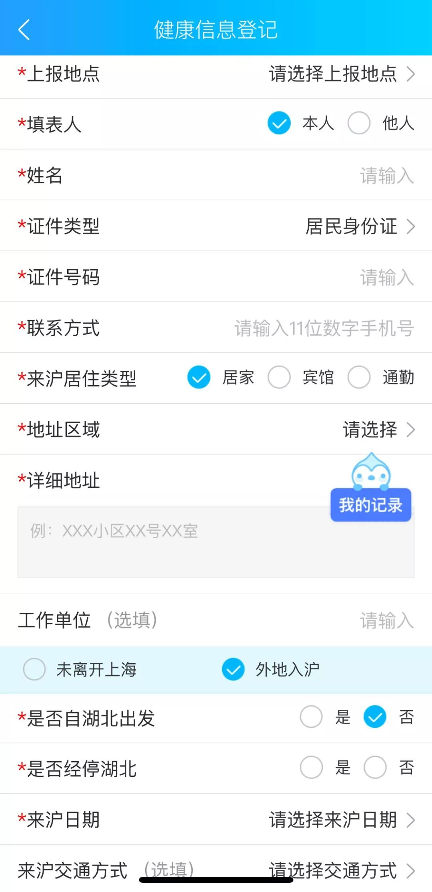
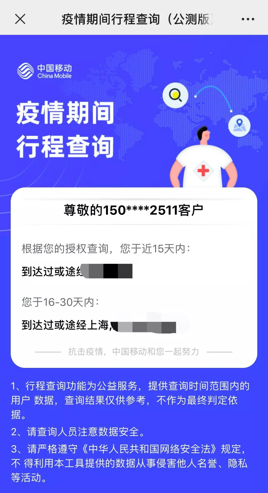
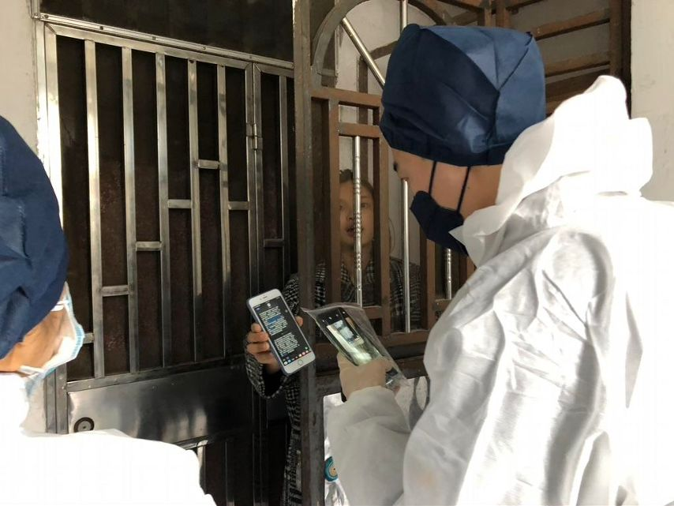

“无人机+特派快递员”，“上海堡垒”由他们铸成
原文链接 备份链接 面对依然紧张的防疫形势，上海的街道、居民区、楼宇不断放出防疫大招，以上海人特有的智慧筑起“上海堡垒”，守卫这座城市。 文 | 陈 冰 2月10日是上海正式意义上的“复工日”，在经历了一个史无前例安静春节之后，人员返程、 …


2月18日和19日，上海新冠肺炎确诊病例连续2天零增长。对于这个人口超过2400万的超大城市，消息令人振奋。
要帮助基层准确定位重点排查人群，入沪人员全数据的信息收集是重要的第一步。
上海复工的第一天，防控升级，全市小区陆续开始实施封闭式管理。湖北之外，明确了14个重点关注地区。
“上海新型肺炎公共服务平台”正式上线，市民可快速登记健康信息，获得疫情防控相关服务。但真正做好防控，还是要靠基层和社区。
在小区封闭式管理的过程中，邻里之间相互的督促、群防群治也起到了很大的作用。

在需要排队的地方，居民们戴上口罩，前后保持一米左右的距离自觉排队，上海的这种排队方式，大概也算是疫情之下的特殊产物了。

2月17日下午一点半不到，老吴戴上口罩和排队号码牌出门了。这是上海第二批口罩供应，每个家庭可以购买5只口罩。“就像当年发粮票，凭票买米一样。”
这一天，老吴买到了5个有独立包装的一次性口罩，花了8元，而上一批口罩是散装的，花了2.3元。药房解释称，每一批口罩的厂家不同。
对于小区居委会的工作，老吴还比较满意，尽管还不尽完美，但也觉得特殊时期，需要大家一起来克服。“疫情发生，小区就是最重要的地方啊，要乱也就是从这里开始乱的。”
老吴的担忧也可以说是上海市民的一种共识。不过从目前来看，局面正在一点点好转。
截至2月18日24时，全国首次出现了出院患者高过新增确诊人数的情况。另一个好消息是，全国已有上海、贵州、海南等8个省市的新增病例实现零增长。2月19日，上海确诊人数再次无新增。对于这个人口超过2400万的超大城市，零增长的消息令人振奋，很多市民都在官方微信号“上海发布”的推文后留言：“昨天和今天上午都是0，太好了。不过还是不能放松警戒。”

△ 制图：吴晔婷
那么，上海的复工防疫战是如何打的？
扩大重点排查
在闵行区吴泾镇，春节后返沪的陶苗苗就不能出门参与买口罩了。目前，两室户的房子里，从安徽阜阳返沪的全家七口人需要一起隔离14天，如果没有症状，才能解除医学隔离。
陶苗苗的老家在安徽阜阳，2月8日晚上自驾回到了上海，除了陶苗苗一家三口，同行的还有陶苗苗的母亲、妹妹以及丈夫的两个亲戚，总共7人。这两个亲戚在上海嘉定区租房生活，打算回上海的前一天，接到了房东和所属村委队长的电话，提醒他们嘉定区的道口排查标准升格了，租户会被劝返。考虑到或早或晚回沪，都需要医学隔离14天，两人就准备和陶苗苗一家一起，回到闵行区吴泾镇的家中暂住。
回到上海的第二天一大早，陶苗苗就到了居委会登记返沪信息，然后开始居家隔离。这一天，陶苗苗的老家安徽阜阳新增确诊病例7例，累计确诊病例125例。安徽成了湖北之外，仅次于广东、河南、浙江的重灾区。而阜阳的确诊数在安徽省排第三位，前两位分别是合肥和蚌埠。
2月10日，上海复工的第一天，防控升级，全市小区陆续开始实施封闭式管理。湖北之外，明确了14个重点关注地区，其中就包括了安徽阜阳。

这对于基层来说，就相当于增加了排查的工作量。吴泾镇街道社区卫生服务中心当天收到了来（返）沪人员管控通知，上门排查的工作新增要求14个重点地区的来沪人员都签订《居家隔离要求》。
2月12日，由社区卫生服务中心的医生、吴泾镇派出所的民警和居委会干部组成的三人小组敲开了陶苗苗家的门，询问了来沪的过程，途经哪些服务区，有没有去过疫情重点地区，并量取了七人的体温，请七人签订了《居家隔离观察承诺书》。

陶苗苗告诉八点健闻，顺利的话，本周日就能够解除隔离。隔离期间，买菜和倒垃圾都是由居委会代劳。在买菜平台上下单，菜品送到小区门口后，陶苗苗会在微信群里告知居委会的工作人员，再由工作人员短驳送上门；生活垃圾是每天早上十点前放在门口，会有居委会的工作人员统一收走代扔。至于七口人在家中的生活，陶苗苗倒也不觉得无聊，“男人们打打游戏，女人们带带孩子，晚上打地铺睡觉。”
对于居家隔离，陶苗苗非常认同，“我们全家在居委会登记完，就开始自觉在家居家隔离了。辛苦的是居委会的人。”
12日这一天，吴泾镇社区卫生服务中心的医警居三人小组需要上门排查的人数超过70人，主要是像陶苗苗这样来自14个重点地区返沪的人员。这份70多人的名单综合自入沪人员在健康云APP上登记的信息、公安大数据以及社区上报的数据。
三人小组共有七组，按照小区划分，每组大约上门排查十几人。早上八点半，七部警车从社区卫生服务中心出发，每辆车上有一个民警和一个医生，每到一个小区，民警和医生先到小区与相关的居委会干部会合，三人一起根据名单上门排查，需要排摸清楚返沪人员的途径路线、抵沪时间、密切接触人群。
三人小组中，各角色分别起到不同的作用：民警可以在联系不到排查人员时与派出所驻所民警联系提供公安信息支持，医生可以负责了解排摸对象的身体状况、详细询问接触史，居委会干部更熟悉小区的环境以及小区人员的情况，可以帮助提升排查的效率。一旦需要隔离，居委会干部也能提供更好的后续隔离服务。
在小区排摸的过程中，警察和医生的全套防护服总是能引来居民的关注，居民会疑惑发生了什么，是不是有确诊病人，甚至还有人来向排查的警察和医生举报小区内的可疑人员和情况。
“一定要跟居民解释清楚，不然过几天可能又是一个110警情，这就浪费警力了。”民警孙晓亮每次遇到问题，都会如实告诉居民，这只是重点排查，不是确诊，不用担心。居委会干部也会安抚居民，“要是有确诊病人，不会就来这么几个人的。”

这位居委会干部也告诉八点健闻，推进防疫工作，在以外来人口和本地老年人为主的老小区相对困难一些。早期，有一些不配合戴口罩的居民，而目前到了进出小区需要通行证和测量体温的严防阶段，有些居民还没有形成自觉空开一米排队测体温的习惯。而居委会能做的，是不断地劝诫。“比如一些热衷于聚在一起晒太阳的老人家，我们会提醒他们戴好口罩，如果一定要一起晒太阳，那也至少坐得开一点。”

“信息战”
从湖南老家返沪的经历让小谭记忆深刻。
2月10日晚上6点半，小谭捂着N95口罩到达长沙黄花机场。门口有两三个戴着口罩、穿着防护服的工作人员测体温。往常这个点的机场，办理乘机手续、托运的窗口都会排着很长的队，紧急通道上总会有些差点误点的乘客。
这种场面在这一天并未出现。乘客很少。环顾四周，大家都低着头，戴着口罩，尽量避免说话。有人戴的是蓝色的一次性口罩，有人戴着N95。
飞往上海的航班本来是9点半起飞。起飞之前，需要扫码登录健康云，填写航班信息、出发地点，有没有湖北停留、居住史。填写完成后，小谭在手机上收到了一条信息——“您的《来沪健康信息登记表》已收到”，同时收到了落地出口提示：非湖北地区、没有湖北停留史的乘客，从B通道出，并附一个核验码。


受上海虹桥机场的疫情管控影响，飞机近11点才起飞。飞机并没有坐满，分了前、中、后三个区域，每个区域之间都隔了很多空座。
到达虹桥机场，已经是晚上12点多。出口处有A、B两个通道，都站着身穿防护服、戴口罩的工作人员把守。未经重点地区的小谭从B通道通行，流程包括测体温，以及向工作人员出示手机收到的核验码。
小谭打了个专车回到上海的家中，和专车司机的对话让她感受到了本地人的担忧，“你回来也是在家办公，为什么着急回上海？”
她家的小区共有三个出入口，返沪当晚，已经实行了封闭式管理，小谭只得从唯一开放的南门进入。进小区之前，被要求再次测体温、填写返沪信息。此后，同样的返沪信息、离沪信息、身体状况的填写，小谭又被要求做了至少三次，分别来自物业、居委会和工作地街道。
要帮助基层准确定位重点排查人群，实现精细化管理，入沪人员全数据的信息收集是重要的第一步。
小谭起飞前填写信息的平台就是这次疫情中新开发出来的。1月31日，基于上海健康云系统的“上海新型肺炎公共服务平台”正式上线，平台搭载“来沪人员健康动态观察系统”、“发热症状在线咨询平台”、“实时疫情通报”、“发热门诊一键查”、“预约挂号如约至”等功能，市民可快速登记健康信息，获得疫情防控相关服务和实时资讯。
参与该平台搭建的一位企业高管告诉八点健闻，平台的上线并非临时一蹴而就的，主要依托前期城市各部门数据的打通，这次主要是在之前的健康云平台的基础上开发了突发疫情版块。
作为健康云系统建设的亲历者，该高管回忆称，SARS时期，政府层面就希望能够实现这样的场景：“道口这边来一个人，到什么地方去，社区马上就能知道。这次就完全做到了。信息化的方式替代原有手头表格的统计，道口的来沪人员信息能快速地落实到具体责任人。”
上海市卫生健康信息中心主任谢桦曾向媒体描述过信息采集后逐级落到基层的途径：市级平台采集信息之后，根据居住地点分配到所在的区，由区里的负责人分配到社区卫生服务中心，再由社区卫生服务中心分配到具体的工作人员，由具体工作人员来监管。监管的内容包括居家隔离以及每天两次体温的测量。
在防控疫情、应对城市突发状况中，信息化的配合，让上海防疫工作的一线人员有了新的帮手，帮助城市运营者实现了疫情防控管理闭环。截至2月15日，填报数据经比对确诊8人，疑似44人，排除126人，出院1人。
收集到的数据通过大数据分析比对，能帮助决策者了解疫情的动态情况，甚至进一步做出防控的决策部署。“比如具体到哪家工厂能不能复工，这也是可以通过数据分析得出的，依据可以包括这家工厂的员工中有没有从重点地区来的，相关的供应链的情况等等。”上述高管说道。
“人民战争”
居委会干部告诉八点健闻，大部分居家隔离人员还是非常自觉的，一方面是自己有隔离意识，另一方面，邻里之间也起到了监督的作用。
上海市司法局一级巡视员刘平曾表示，封闭式管理并不是隔绝，也不是封锁，而是一种有效、可控的管控措施，目的是发挥社区群防群治力量，加强源头管控，守好社区的安全门。
这一天，孙晓亮所在的三人小组共排摸了11人，因为涉及一家七口，其实总计只有五户，但结束排查已经是中午11点半了，整整花了三个小时。每到一个小区，民警和医生对于小区居委会的所在地已经很熟悉了，居委会干部也知道每天都可能会有上门排查，会有专门的人在居委会值班，所以找居委会和三人小组会师的过程很顺利，并不耽误时间。而耽误时间的主要是一些特殊情况，这一天遇到的情况主要有：待排查人员已经复工工作不在家；登记的房屋信息实际是租户居住，还需要再通过派出所的公安信息联系上本人。
在孙晓亮看来，大数据产生的名单只是一个基础，上门排查的过程中需要更详细地排查，摸清证据链。“比如我们的数据可能只登记了车辆车主的信息，那上门排查的时候，还需要问清楚同行人员的情况。”
为了防止返沪人员隐瞒信息，孙晓亮会要求返沪人员提供能够证明返沪路线和返沪时间的证据，这些证据包括高铁车票或者购票信息、服务区消费记录、导航软件的行驶轨迹以及电信服务商的短信提醒。“春节期间，高速公路可能免通行费，我们无法判定自驾抵沪的时间，那也可以提供回到上海后的消费记录。如果这些都没有，重点地区的返沪人员的隔离日期只能按照上门排查日开始。”

△ 排查对象向民警出示抵沪时间短信证据
随着上海复工、返程高峰的到来，孙晓亮明显感觉到上门排查任务加重了。“复工前一天2月9日最多，吴泾镇总共上门排查了300多人。”
在上海，疫情防控措施被概括为“四管齐下”——医疗救治、道口查控、社区防控、有序复工。其中，道口作为入沪防线，承担了切断输入性风险的任务，截至2月14日，全市9个省际高速道口、20个地面公安检查站、63个等外道口，累计检查车辆243万余辆次、人员560万余人次，送集中隔离观察点1676人，移交体温异常人员587人，劝返相关地区来沪车辆4854辆、人员8220人。除了陆路通道，铁路、机场等入沪通道也是排查重点。在机场、火车站，每位抵达旅客需经过体温检测和信息登记核查。
各道口返沪人员的信息登记是第一步，而真正的管理最终是要落实到基层的精细化防控上的，可以说真正的战场还是在基层。谢桦在接受媒体采访时也提到，“防疫工作的目标和手段是非常明确的，目标是减少传播，手段就是切断传播途径。线上登记系统只是能够发现需要重点关注的人群，真正要找到和管理，还需要靠基层和社区。”
吴晔婷|撰稿 摄影
微信号：wytlucky19
谭卓曌|撰稿
微信号：tzz19930706
季敏华|责编
微信号：janejiminhua

我们尊重原创版权，未经允许请勿转载。
授权转载
郑琪 微信号: 1281949389
商务合作
上海：leslee 13916263824
北京：Jessie 13911125922
线索爆料、意见反馈，加入核心读者社群
请扫码联系健闻君

让朋友们看到你也在看
↓↓↓
原文链接 备份链接 面对依然紧张的防疫形势，上海的街道、居民区、楼宇不断放出防疫大招，以上海人特有的智慧筑起“上海堡垒”，守卫这座城市。 文 | 陈 冰 2月10日是上海正式意义上的“复工日”，在经历了一个史无前例安静春节之后，人员返程、 …
原文链接 备份链接 - 疫 情 之 下 - 想起从武汉回来经历的种种，心里有些五味杂陈，我为村干部们的疫情防控工作点赞，为自己无恙感到庆幸，也更加迫切希望疫情早日消散，生活能重新美好起来。 ” 1 1月学期末，忐忐忑忑地考完所有考试，我终 …
原文链接 备份链接 作家成向阳的妻子是抗疫一线的医护人员，他记录下这些天来与妻子“相隔两地”的日常，虽是分别生活着，却又像始终在一起，一起坚守着，等春天到来。 1月29日 | 晴 上午8点，她套好蓝色无纺布隔离衣、戴好桶帽和护目镜，捂紧三 …
原文链接 备份链接 播放音乐 | 阅读效果更佳 感谢 | 您对霍超LEGAL的关注、阅读与分享 _特别感谢小吴同学，日记有了衍生周边2333 _ 十分感人的是，在写日记的第五天，收到了小吴同学的漫画祝福，显得自己好像是在有猫、有狗、有光、 …
原文链接 备份链接 数百万人的返京潮将至，北京加强防控是情理之中。但将回来的人不加区分地拒之门外或自行隔离，令本该叫好的措施变了味儿 文 |《财经》记者 信娜 孙爱民 实习记者 朱贺 编辑 | 王小 封闭社区。春节后，面对数百万人从各地陆 …